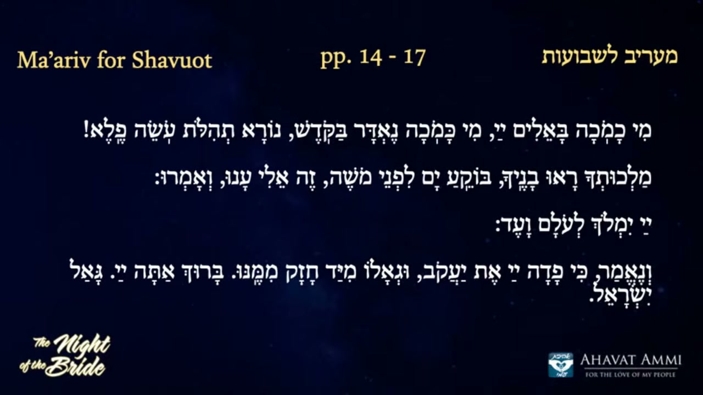

門徑與花園：為新娘之夜預備心靈 The Gateway and the Garden: Preparing the Heart for the Bride's Night
在拉比沙皮拉的主要教導之後、在「立禱」(Amida) 那兩個小時神聖等候之前，艾格尼絲修女從印尼連線，帶著「萬國同站」的聲音、「為身分而戰」的話語、與「打開公義之門」的禱告，為全球的新娘預備心靈。這不是一場講道；這是一段牧養的代禱。 Between Rabbi Shapira's main teaching and the two sacred hours of the Amida, Sister Agnes joins live from Indonesia — bringing the voice of the nations standing together, the word about “the war for identity,” and the prayer that throws open “the gates of righteousness” for the global bride. This is not a sermon; it is a pastoral intercession.
艾格尼絲修女剛剛慶祝完生日。她從印尼的家中連線，臉上仍帶著節日的喜樂，但語氣已經轉為極為認真的牧養語調：「朋友們，聽我說，聖靈在這裡。我們正進入今晚最重要的、最重要的兩個小時。」這段四十七分鐘的牧養插曲，沒有新的神學公式，也沒有複雜的米大示——只有一位修女、一份禱告、一個花園的門徑、與一位即將擁抱祂新婦的神。她點名一個又一個國家——印尼、委內瑞拉、中國、馬達加斯加、台灣、西班牙、加州——把它們一個一個放在主的面前。然後她邀請所有人站起來，一起唸詩篇第118篇的禱告：「為我打開公義之門，使我可以進去，讚美耶和華。」(תְּפִלָּה tefillah，禱告) 這正是新娘進入婚禮帳幕之前所做的事——她整理她的妝、她點亮她的燈、她屈膝、她預備。 Sister Agnes has just celebrated her birthday. She joins live from her home in Indonesia, the joy of the celebration still on her face, but her voice has shifted into the very serious tone of a pastor: “Friends, listen to me, the Holy Spirit is here. We are entering the most important — the most important two hours right now.” This forty-seven-minute pastoral interlude offers no new theological formula, no elaborate midrash — just one sister, one prayer, one gateway into the garden, and one God about to embrace His bride. She names country after country — Indonesia, Venezuela, China, Madagascar, Taiwan, Spain, California — laying each one before the Lord. Then she invites everyone to stand and pray together the words of Psalm 118: “Open the gates of righteousness for me, that I may enter through them, and praise the LORD.” (תְּפִלָּה tefillah, prayer.) This is exactly what the bride does before stepping into the wedding chamber — she adjusts her veil, she lights her lamp, she bends her knee, she makes herself ready.
一、列國同站 ── 一個全球的家在守望I. The Nations Standing Together — A Global Household on Watch
艾格尼絲修女開場的方式並不是「宣告」，而是點名。她像一個母親在大家庭聚會上，逐一叫出每個孩子的名字：「印尼來了。我們今天為印尼這個國家禱告。⋯⋯哎呀，這麼多國家。許多人從委內瑞拉來。⋯⋯中國！我們高興有中國一起。榮耀歸給神。⋯⋯馬達加斯加！這太驚人了，馬達加斯加！⋯⋯佛羅里達⋯⋯加州⋯⋯西班牙⋯⋯台灣，台灣在這裡。榮耀歸給神，我們對台灣非常激動——一個我們心中親愛的國家。」 Sister Agnes opens not by “proclaiming” but by naming. She is like a mother at a great family reunion calling out each child's name: “Indonesia is here. We pray for the nation of Indonesia today. … My goodness, so many countries. A lot of people from Venezuela. … China! We are glad to have China with us. Glory to God. … Madagascar! Isn't that amazing — Madagascar! … Florida … California … Spain … Taiwan, Taiwan is in there. Glory to God, we are very excited about Taiwan — a nation that is dear to our heart.”
這個「點名」並非寒暄。這是一個牧者深知的工作：把分散的肢體一個一個召聚到主的面前。當你的名字被叫出來，你就不再是一個匿名的觀看者；你成了這個身體的一部分，你有了座位，你有了責任。希伯來文中「聚集」這個動詞 kahal（קהל）本身就是「教會、會眾」(kahal) 這個名詞的字根。新娘不是一個人；新娘是一個被召聚、被點名、被認識的身體。 This naming is not small talk. It is the deep work of a pastor: gathering scattered members one by one before the Lord. Once your name is called you are no longer an anonymous viewer — you become part of the body, you have a seat, you carry responsibility. The Hebrew verb “to gather,” kahal (קהל), is the very root of the word for “congregation” or “assembly” (kahal). The bride is not one person; she is a body that has been gathered, named, and known.
這對於華人觀眾來說有特別的份量。從中國大陸、台灣、香港、東南亞、北美、歐洲，每一個收看這場聚會的華人信徒，當艾格尼絲修女說出「中國」、「台灣」的時候，都被神親手把座位放在這個全球的婚禮席上。我們不是邊緣的觀看者；我們是被叫進來的家人。 This carries special weight for the Chinese audience. From mainland China, Taiwan, Hong Kong, Southeast Asia, North America, Europe — every Chinese believer watching this gathering, when Sister Agnes names “China” and “Taiwan,” has a seat at the global wedding table set personally by God. We are not peripheral viewers. We are family being called in by name.
二、「最重要的兩個小時」── 為何「立禱」是中心II. “The Most Important Two Hours” — Why the Amida Is the Center
艾格尼絲修女反覆強調一件事：「弟兄姊妹們，我們正進入最重要的、最重要的兩個小時。哈森將會帶我們一直走到 Amida。」「Amida」（עֲמִידָה，「站立」）是猶太傳統中最神聖的時刻——會眾安靜地站立、面向耶路撒冷、低聲與神對話。在新娘之夜的脈絡中，這個 Amida 被擴張為「全球新娘一同站立等候新郎」的兩個小時。 Sister Agnes repeats one thing again and again: “Brothers and sisters, we are entering the most important, the most important two hours right now. Hassan is going to take us together with me all the way to Amida.” The Amida (עֲמִידָה, “standing”) is the most sacred moment in Jewish liturgy — the congregation stands in silence, facing Jerusalem, whispering into the ear of God. In the Night of the Bride this Amida is expanded into two hours in which the global bride stands together waiting for her Bridegroom.
為什麼這兩個小時這麼重要？因為它是等候的時刻——而等候，在聖經中，是新娘的特徵性動作。詩篇 27:14：「要等候耶和華，當壯膽，堅固你的心，我再說，要等候耶和華。」雅歌 2:9 描寫新郎「站在牆壁後，從窗戶往裡觀看，從窗欞往裡窺視」——新娘的工作不是衝出去，而是站著、預備、等候。艾格尼絲修女的提醒正是這個：不要在那兩個小時把心思放在其他地方。神就在那個 Amida 裡降臨。 Why are these two hours so important? Because they are the hours of waiting — and waiting, in Scripture, is the bride's signature posture. Psalm 27:14: “Wait for the LORD; be strong, and let your heart take courage; wait for the LORD!” Song of Songs 2:9 describes the Bridegroom “standing behind our wall, gazing through the windows, looking through the lattice” — the bride's work is not to run out; it is to stand, prepare, and wait. Sister Agnes's reminder is precisely this: do not let your attention drift in those two hours. God Himself descends in that Amida.
她並不掩飾這個時刻的張力：「我要說的是，就在 Amida 裡，我們會停下來。我們會在進入生命之前停下來。」這個「停下來」就是新娘的安息（שַׁבָּת shabbat）——不是無所事事，而是把自己整理好、把自己交給新郎。這是奉獻的最高姿態。 She does not disguise the tension of the moment: “What I want to say is — right in the Amida we will stop. And we will stop just before entering into life.” This “stopping” is the bride's own Sabbath rest (שַׁבָּת shabbat) — not idleness, but composing herself, surrendering herself, into the hands of the Bridegroom. It is the highest posture of consecration.
三、為身分而戰 ── 「亭拿」的內在III. The War for Identity — The Inner Timna
在邀請大家站立禱告之前，艾格尼絲修女把那「兩個小時」的核心命題說了出來：「我想快速地說出今晚的話語：你們正處於一場為「亭拿」(Timna) 身分而戰的戰爭，要在你們內心被提升。」 Before inviting everyone to stand and pray, Sister Agnes states the central thesis of those two hours: “Let me quickly say the word for this evening: You are in a war for the identity of Timna to be raised inside of you.”
「亭拿」(תִּמְנָע / תִּמְנָה Timna) 在舊約裡是創世記 36:12 提到的一個女子——以掃的兒子以利法的妾——也是一處與曠野試煉相關的地名。在拉比沙皮拉這次新娘之夜的整體框架中，「亭拿」象徵著那個被忽略、被遺棄、卻被神親手抬起來的盟約身分。她不是名門之後，她不在族譜的中心，但神看見她，神記得她。新娘在被擁抱之前，必須先重新接受自己被神看見、被神記得的身分。 “Timna” (תִּמְנָע / תִּמְנָה Timna) in the Hebrew Bible is the woman mentioned in Genesis 36:12 — concubine of Eliphaz son of Esau — and also a place name associated with wilderness testing. In the larger framework of Rabbi Shapira's Night of the Bride, “Timna” symbolises the overlooked, abandoned, and yet personally lifted up covenant identity. She is no aristocrat. She is not at the centre of any genealogy. But God sees her; God remembers her. Before the bride can be embraced, she must first re-receive the identity of being seen and remembered by God.
這是「戰爭」(milchemet מִלְחֶמֶת)——但不是外在的戰爭，而是內在的戰爭。世界用一千種方式告訴你：你不夠好、你不被看見、你的禱告沒有效、你的家庭沒有指望、你的國家被遺忘了。神對新娘說的話是相反的：「我聘你永遠歸我為妻。」(何西阿書 2:19) 艾格尼絲修女這晚的呼籲，就是請每個觀看的人在那「兩個小時」之中，讓神對你的看見，戰勝這世界對你的忽略。 This is a “war” (milchemet מִלְחֶמֶת) — but not an outward war; an inward war. The world tells you in a thousand ways: you are not enough, you are not seen, your prayers do not work, your family has no hope, your nation has been forgotten. To the bride, God says the opposite: “I will betroth you to Me forever.” (Hosea 2:19) Sister Agnes's appeal this night is precisely this: in those two hours, let God's seeing of you overcome the world's forgetting of you.
四、打開公義的門 ── 詩篇 118 的禱告IV. Opening the Gates of Righteousness — The Prayer of Psalm 118
艾格尼絲修女接著邀請所有人站立——「至少站起來，跟我一起唸這段。如果你能跟著自己語言的頁碼最好，如果不能也至少在場。」然後她帶出整個夜晚最重要的一段禱告，就是詩篇 118:19-22 的話： Sister Agnes then invites everyone to stand — “at least stand with me, recite this with me. Follow the page number in your own language if you can; if you can't, at least be present.” Then she leads the most important prayer of the night, the words of Psalm 118:19–22:
「為我打開公義的門，使我可以進去，讚美耶和華。這是耶和華的門，義人要進入。我要稱謝你，因為你已經應允我，又成為我的耶書亞（拯救）。匠人所棄的石頭，已成了房角的頭塊石頭。打開這門，為餘民打開吧。」——詩篇 118:19-22（艾格尼絲修女的禱告） “Open the gates of righteousness for me, that I may enter through them and praise the LORD. This is the gate of the LORD; the righteous shall enter through it. I praise You, for You have answered me and have become my Yeshua (salvation). The stone that the builders rejected has become the chief cornerstone. Open the door; open it for the remnant.”— Psalm 118:19–22, prayed by Sister Agnes
這段禱告極其精煉地把三件事放在一起：第一，新娘請求進入的權利——「為我打開公義的門」。新娘不能自己撞門進去；她必須等門被打開。第二，新娘認出那位拯救她的就是耶書亞（「你成為我的 Yeshua」）——她不是憑自己的義進去，而是憑彌賽亞的義。第三，新娘為餘民代求——「打開這門，為餘民打開吧。」她不是只為自己進去；她把整個家、整個國家、整個流亡的肢體都帶在身上。 This prayer packs three things tightly together. First, the bride asks for the right to enter — “Open the gates of righteousness for me.” The bride cannot batter down the door herself; she must wait for it to be opened. Second, the bride recognises that the One saving her is Yeshua — “You have become my Yeshua.” She does not enter by her own righteousness but by the righteousness of the Messiah. Third, the bride intercedes for the remnant — “Open the door, open it for the remnant.” She does not enter only for herself; she carries her whole household, her nation, the whole exiled body on her shoulders.
這正是新娘真正的姿態：謙卑的請求、清楚的認信、廣闊的代禱。一位修女在四十七分鐘裡能教給我們的，不亞於一場神學講座。 This is the true posture of the bride: humble request, clear confession, sweeping intercession. What a sister can teach us in forty-seven minutes is no less than a full theological lecture.
五、新郎的歌 ── 雅歌與十件衣裳V. The Bridegroom's Song — Song of Songs and the Ten Garments
在禱告之後，艾格尼絲修女邀請會眾與她一起讀雅歌——一段「新娘文學」的精華。她先用希伯來文起句：「V'elbosh asara malbushim, keneged asara pa'amim shekara Yisrael kalah.」中文直譯是：「祂穿戴十件衣裳，正如以色列被稱為新娘的十次。」這是猶太傳統中極美的一個米大示——當神在救贖以色列的時刻穿戴祂的十件「義袍」，每一件對應聖經中神稱以色列為「新婦」的一次。 After the prayer, Sister Agnes invites the congregation to read with her from the Song of Songs — the essence of the “bridal literature.” She opens in Hebrew: “V'elbosh asara malbushim, keneged asara pa'amim shekara Yisrael kalah.” Literally: “He wore ten garments — corresponding to the ten times Israel was called a bride to Him.” This is one of the most beautiful midrashim in Jewish tradition — at the moment of redemption God dons His ten “garments of righteousness,” each one matching one of the ten times Scripture calls Israel His bride.
然後她讀出雅歌的字句，這位新郎對祂的新娘所唱的歌： Then she reads aloud the words of the Bridegroom to His bride:
「我妹子，我新婦，我進了我的園中——⋯⋯我新婦，求你與我一同從黎巴嫩來。⋯⋯我妹子，我新婦，乃是關鎖的園、禁閉的井、封閉的泉源。⋯⋯我新婦，你的愛情何其美！⋯⋯我新婦，你奪了我的心。⋯⋯歡喜和快樂的聲音、新郎和新婦的聲音⋯⋯耶和華如此說。你必使他們如珠寶配戴，如新婦以裝飾自己。新郎怎樣喜悅新婦，你的神也要照樣喜悅你，正像新婦以她的妝飾自己。」——雅歌 4-5 章 / 耶利米書 33:11 / 以賽亞書 62:5 “I have come to my garden, my own, my bride. … From Lebanon come with me, from Lebanon, my bride, with me. … A garden locked is my own, my bride, a fountain locked, a sealed-up spring. … How sweet is your love, my own, my bride. … Sweetness drops from your lips, O bride. … You have captured my heart, my own, my bride. … The sound of mirth and gladness, the voice of the bridegroom and the bride. … Thus declares the LORD: You shall don them all like jewels; deck yourself with them like a bride. As a bridegroom rejoices over the bride, so will your God rejoice over you, like a bride adorned with her jewels.”— Song of Songs 4–5 / Jeremiah 33:11 / Isaiah 62:5
這段經文沒有教義可以分析，只有被愛的感覺。神對祂的新娘說：「你奪了我的心。」這位至高者，這位榮耀的神，把祂的心放在祂新娘的手裡。這就是「新娘之夜」這個節期想要在我們裡面恢復的：被神所愛的覺知。 אַחֲוָה achavah（姊妹之情，sisterhood）——艾格尼絲修女藉著她的聲音、她的點名、她的代禱，讓全球的姐妹們真實地感覺到她們是被新郎呼喚的那位。 There is no doctrine to dissect here — only the experience of being loved. God says to His bride: “You have captured my heart.” The Most High, the God of glory, places His heart in the hand of His bride. This is what the Night of the Bride longs to restore in us: the awareness of being loved by God. אַחֲוָה achavah — sisterhood. Through her voice, through her naming, through her interceding, Sister Agnes lets the global sisterhood actually feel that she is the one being called by the Bridegroom.
六、釋放被擄的 ── 「我使你自由」的見證VI. The Captives Set Free — A Testimony of “I Make You Free”
在雅歌之後是Ma'ariv（מַעֲרִיב，傍晚禱告儀式）。艾格尼絲修女與會眾一同唸誦：「耶和華做王，祂披上威嚴；耶和華披上能力，束上腰帶。世界堅立，永不動搖。」（詩篇 93:1-3 改編） 然後她翻譯哈森朗誦的一段話——這段話是這個夜晚裡的福音宣告： After the Song of Songs comes the Ma'ariv (מַעֲרִיב, evening prayer). Sister Agnes and the congregation pray together: “The LORD reigns, He is clothed in majesty; the LORD is clothed, He has girded Himself in strength. The world is established, immovable.” (Psalm 93:1–3, adapted) Then she translates a passage the cantor has just chanted in Hebrew — and this passage carries the gospel proclamation of the night:
「我就是主，我就是主。我為你行神蹟。我把你從監牢裡領出來。你現在被釋放了——我說，你被釋放了。願一切被擄的，在此刻得到釋放！」— 艾格尼絲修女翻譯哈森的希伯來禱告 “I am the LORD, I am the LORD. I am doing miracles for you. I take you out of prison. You are set free right now — I said, you are set free. May all the captives be set free, right now!”— Sister Agnes translating the cantor's Hebrew prayer
這是一段עֵדוּת edut（見證）——不是「將會發生」的應許，而是「現在發生」的宣告。神不是在這個時刻評估你的「資格」；祂正在釋放你。在一場為新娘而設的夜晚裡，被釋放的不是僕人，而是新娘。一個從牢裡走出來的女人，洗淨自己、換上禮服、走向她的新郎——這就是聖經整本書的中心畫面。 This is an act of עֵדוּת edut — testimony. Not “it will happen” but “it is happening now.” God is not at this moment evaluating your worthiness; He is setting you free. On a night set apart for the bride, the one being set free is not the servant but the bride. A woman walks out of prison, washes herself, puts on her wedding garment, walks toward her Bridegroom — and that is the central image of the whole Bible.
緊接著她邀請會眾與她一同呼喊：「Bo, Yeshua, Bo! 來吧，耶書亞，來吧！」這是用希伯來文向新郎發出的呼喚——「bo」(בּוֹא)，意思是「來」。新娘的最後一句話、整本聖經的最後一句話，都是這一個字。啟示錄 22:17：「聖靈和新婦都說：『來！』」啟示錄 22:20：「主耶穌啊，我願祢來！」 She then invites the congregation to cry out with her: “Bo, Yeshua, Bo!” Come, Yeshua, come! It is the Hebrew word for “come” (בּוֹא bo) called out to the Bridegroom. The bride's final word — and the final word of the entire Bible — is precisely this one word. Revelation 22:17: “The Spirit and the bride say, ‘Come!’” Revelation 22:20: “Come, Lord Jesus!”
七、耶路撒冷的哀歌 ── 一個未完的擁抱VII. The Lament for Jerusalem — An Embrace Not Yet Complete
在這段牧養插曲的尾端，艾格尼絲修女用英文、西班牙文與希伯來文，三次朗讀馬太福音 23:37-39 與路加福音 13:34-35 中耶書亞自己的哀歌： Near the end of this pastoral interlude, Sister Agnes reads — in English, Spanish, and Hebrew — Yeshua's own lament from Matthew 23:37–39 and Luke 13:34–35:
「耶路撒冷啊，耶路撒冷啊，你常殺害先知，又用石頭打死那奉差遣到你這裡來的人！我多次願意聚集你的兒女，好像母雞把小雞聚集在翅膀底下；只是你們不願意。看哪，神將你們的家撇給你們了。我告訴你們，從今以後你們不得再見我，直等到你們說：「奉主名來的，是應當稱頌的。」」——馬太福音 23:37-39 “Jerusalem, Jerusalem, you who kill the prophets and stone those sent to you, how often I wanted to gather your children, as a hen gathers her chicks under her wings, but you were not willing. Look, God is leaving your house to you, abandoned. For I tell you, from now on you will not see me again until you say, ‘Blessed is He who comes in the name of the LORD.’”— Matthew 23:37–39
這段經文之所以放在這裡，是因為它把這個「新娘之夜」最深的傷口擺在桌面上：新郎一直想擁抱新娘，但新娘——耶路撒冷——卻一次又一次推開祂。「我多次願意聚集你的兒女，只是你們不願意。」這不是一個被丟棄的故事，而是一個仍未完成的擁抱。新郎還在等。直到那一天，新娘終於開口：「奉主名來的，是應當稱頌的」(Baruch ha'ba b'shem Adonai，בָּרוּךְ הַבָּא בְּשֵׁם יְהוָה)——那一刻，門就會打開，新郎就會回來。 This passage stands here because it places the deepest wound of the Night of the Bride on the table: the Bridegroom has longed to gather His bride, but the bride — Jerusalem — has pushed Him away again and again. “How often I wanted to gather your children, but you were not willing.” This is not the story of a discarded bride; it is the story of an embrace not yet complete. The Bridegroom is still waiting. Until that day when the bride finally says: “Blessed is He who comes in the name of the LORD” (Baruch ha'ba b'shem Adonai, בָּרוּךְ הַבָּא בְּשֵׁם יְהוָה) — at that moment, the door will open and the Bridegroom will return.
艾格尼絲修女在這裡所做的事情極為勇敢：她讓我們，作為新娘，重新替耶路撒冷說這句話。我們從千萬里之外、從中國、從台灣、從印尼、從委內瑞拉、從馬達加斯加，替她說一遍那句拯救之言。這是新娘之夜真正的代禱：把那個應該由耶路撒冷說的「迎接」之語，先由列國替她說一次，叫她聽見、想起、終於開口。這就是 בְּרָכָה berakhah（祝福）最深的形式——把祝福借給還沒有預備好的人。 What Sister Agnes does here is profoundly brave: she lets us, as the bride, say these words on Jerusalem's behalf. From thousands of miles away — from China, Taiwan, Indonesia, Venezuela, Madagascar — we speak that word of welcome for her. This is the deepest intercession of the Night of the Bride: speaking on Jerusalem's behalf the very words she has not yet said herself, so that she may hear them, remember them, and at last speak them with her own lips. This is בְּרָכָה berakhah at its deepest — lending the blessing to one who is not yet ready to say it.
八、和平的帳棚 ── 一個禱告，一個遮蔽VIII. The Tabernacle of Peace — One Prayer, One Covering
在邀請會眾坐下、進入Shema（שְׁמַע，「以色列啊，你要聽」的禱告）之前，艾格尼絲修女與哈森一同帶領一段我們很少聽到的禱告——「平安帳棚」的禱告(U'fros aleinu sukat shalom yecha，וּפְרֹשׂ עָלֵינוּ סֻכַּת שְׁלוֹמֶךָ)： Before inviting the congregation to be seated and enter into the Shema (שְׁמַע, “Hear, O Israel”), Sister Agnes and the cantor lead a prayer rarely heard outside the synagogue — the prayer of the “Tabernacle of Peace” (U'fros aleinu sukat shalom yecha, וּפְרֹשׂ עָלֵינוּ סֻכַּת שְׁלוֹמֶךָ):
「求祢除去仇敵、瘟疫、刀劍、饑荒和憂愁，從我們的面前撤去撒但，從我們的身後撤去他，在祢翅膀的蔭下蔭蔽我們——因為祢是我們的看顧者、我們的拯救者，祢是有恩典、有憐憫的王。看顧我們的出入，使我們以平安出，以平安入，從今時直到永遠。求祢在我們之上展開祢平安的帳棚。稱頌祢，主啊，祢在我們之上、在祢全體子民以色列之上、在耶路撒冷之上，展開平安的帳棚。」——《Ma'ariv》「Hashkivenu」禱告 “Remove from us the enemy, plague and sword, famine and sorrow; take Satan from before us and from behind us, and shelter us under the shadow of Your wings — for You are our Guardian, our Deliverer, a gracious and merciful King. Guard our going out and our coming in, for life and for peace, now and forever. Spread over us the tabernacle of Your peace. Blessed are You, LORD, who spreads the tabernacle of peace over us, over all His people Israel, and over Jerusalem.”— The Hashkivenu prayer of Ma'ariv
這段禱告中有一個極美的意象：סֻכַּת שָׁלוֹם sukat shalom，「平安的帳棚」。新娘在這個帳棚之下——在新郎為她張開的婚禮帳棚（chuppah חֻפָּה）之下——找到她的安息。她不必再為自己築防護的牆；新郎自己就是她的牆。詩篇 91:4：「祂必用自己的翎毛遮蔽你，你要投靠在祂的翅膀底下。」 The image in this prayer is exquisite: סֻכַּת שָׁלוֹם sukat shalom, “the tabernacle of peace.” Under this tabernacle — under the wedding canopy (chuppah חֻפָּה) the Bridegroom spreads over her — the bride finds her rest. She no longer has to build her own walls of protection; the Bridegroom Himself is her wall. Psalm 91:4: “He will cover you with His feathers, and under His wings you will find refuge.”
九、給華人新娘的話IX. A Word to the Chinese Bride
第一，當你聽見「中國」、「台灣」這兩個名字在艾格尼絲修女口中被讀出來時，不要快快略過。停一下。讓那個被命名的事實在你心裡沉澱：神親自把這個名字放在這場全球婚禮的賓客名單上。你不是「順便」被叫進來的；你是被神親自寫上的。 First, when you hear the names “China” and “Taiwan” spoken aloud by Sister Agnes, do not rush past them. Pause. Let the fact of being named settle into your heart: God Himself has placed your nation on the guest list of this global wedding. You are not invited “by the way” — you have been written down personally by God.
第二，「為亭拿身分而戰」這個提醒對華人特別重要。我們生活在被忽略、被輕看、被誤解的文化處境中——無論是大陸的家庭教會、台灣在國際上的孤立、香港的衝擊、海外華人社群的邊緣化。世界對我們的忽略不是神對我們的忽略。神親自看見那位亭拿；祂也看見每一位華人新娘。 Second, the reminder “war for the identity of Timna” is especially important for Chinese believers. We live in a cultural setting of being overlooked, undervalued, and misunderstood — whether mainland house-church believers, Taiwan's international isolation, Hong Kong's pressures, or diaspora marginalisation. The world's forgetting of us is not God's forgetting of us. God personally saw that Timna; He sees every Chinese bride too.
第三，學艾格尼絲修女「點名禱告」的方式。在你自己的禱告室裡，把你家庭裡每一個人的名字、你教會裡每一個人的名字、你城市每一條街的名字、你國家每一個省的名字，一個一個放在神面前。這就是 תְּפִלָּה tefillah 的核心——不是「籠統地禱告」，而是把名字、把臉、把故事，一個一個放在神面前。 Third, learn from Sister Agnes the practice of naming in prayer. In your own prayer room, take the names of every person in your family, every person in your church, every street in your city, every province of your country, and lay them before God one by one. This is the heart of תְּפִלָּה tefillah — not “praying in general” but laying names, faces, and stories before God one at a time.
第四，學她「替還沒準備好的人說祝福之語」(berakhah)。也許你的父母還沒有信、你的丈夫還沒有歸向主、你的孩子還在叛逆、你的城市還在沉睡。你可以替他們先說那句話——「奉主名來的，是應當稱頌的。」「主啊，求祢來。」「請祢釋放他們。」這就是新娘在新郎面前替家人代求的位分。 Fourth, learn from her practice of speaking the blessing on behalf of those not yet ready to speak it (berakhah). Perhaps your parents have not yet believed; your husband has not yet turned to the Lord; your child is in rebellion; your city is still asleep. You can say the words for them first: “Blessed is He who comes in the name of the LORD.” “Lord, please come.” “Lord, set them free.” This is the bridal position before the Bridegroom — interceding for one's household.
十、結語 ── 讓門打開X. Closing — Let the Gate Be Opened
艾格尼絲修女這段四十七分鐘的牧養插曲沒有提供新的教義，也沒有揭開新的奧秘——它做的事情更基本、也更深：它教我們如何站立、如何呼吸、如何等候、如何打開心讓神進來。在這場「新娘之夜」的長夜中，她是那個拿著燈油、輕聲對其他姐妹說「燈快要點不亮了，加油，新郎就要來了」的童女（馬太福音 25）。 Sister Agnes's forty-seven-minute pastoral interlude offers no new doctrine and unveils no new mystery — it does something more basic and more profound: it teaches us how to stand, how to breathe, how to wait, how to open the heart so that God may enter. Through the long night of the Bride she is the wise virgin (Matthew 25) with the oil in her lamp, whispering to her sisters: “The flame is almost out — add oil, for the Bridegroom is coming.”
她最後留下的禱告，是她在開頭就唸過、又在中段反覆唸過的那一句——也是我們應該把它記在心版上的一句： Her closing prayer is the very prayer she opened with and returned to in the middle — a prayer worth writing on our hearts:
「為我打開公義的門，使我可以進去，讚美耶和華。⋯⋯打開這門，為餘民打開吧。⋯⋯願一切被擄的，在此刻得到釋放。⋯⋯Bo, Yeshua, Bo——來吧，耶書亞，來吧。願祢在我們之上展開祢平安的帳棚。」 “Open the gates of righteousness for me, that I may enter and praise the LORD. … Open the door, open it for the remnant. … May all the captives be set free right now. … Bo, Yeshua, Bo — Come, Yeshua, come. Spread over us the tabernacle of Your peace.”
— 艾格尼絲修女與朋友 · 牧養插曲 · 新娘之夜 5786（婚禮之戰），Ahavat Ammi 事工，2026 年 5 月 23 日 — Sister Agnes & Friends · Pastoral Interlude · The Night of the Bride 5786 (Milchemet HaChatunah), Ahavat Ammi Ministries, 23 May 2026